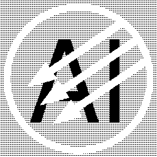
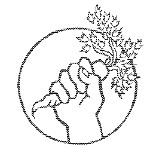

about
This web site and its tender are growing on unceded Worimi and Awabakal Country on the East coast of so-called Australia. Sovereignty was never ceded. This continent always was and always will be Aboriginal land.
hullo! I'm a trans dyke who likes to make things with my hands and sometimes my computer. You may know me as Olive, or another name - if we've met in person please stick to calling me whatever I told you, thanks! You can use the pronouns they, them and theirs to refer to me (if you must), but if we're close you can substitute any of those for that d-word
.
All original content on this site is free to reuse, recycle and remix (please do!), as long as you read adhere to the license.

I'd love to hear from you
please feel free to reach out about anything! questions, nice words, scrappy fiddles, whatever, whenever.
- I appreciate inurgent communication, so I'd prefer an email: eatallyourdarlings at gmail dot com
- Discord's fine, too.
a brief note on ethics
I follow a plant based diet, because it's delightful. Also, because creatures aren't commodities and carnism is carcinogenic, and it's the most significant thing you can do to reduce your carbon footprint.
Amidst a hellscape of neoliberal democracies that so often settle for a conservative middle ground on matters of vital urgency like the life of our planet and everything on it, I find hope in knowing that a liveable future can come about through collective action.
I am aggressively opposed to capitalism, fascism, reactionism, racism, sexism, homophobia, speciesism, transphobia, nationalism, ethnocentrism, religious fundamentalism, and oppressive and coercive power structures in all their systemic and automated forms.
 I am committed to undermining the capitalist structure and its abusive scripts about human worth in relation to work, productivity, and ownership. To subvert oppressive gender norms and put in question the binary. To actively unlearn biased and colonial thinking.
I borrowed some of this wording from Hundred Rabbits (who in turn borrowed from Blood and Dust).
if you'd like to support me…
donate to or join up with a good cause and tell me about it !
thank you very much to everyone who donated to my Movember fund. we doubled the goal, with over $600AUD raised for men's health! it seems that you can still donate to the fund, if you'd like to bump that number up even more.
RIP dykestache, I'm sorry I said I hated you. we will be rejoined in a years time.